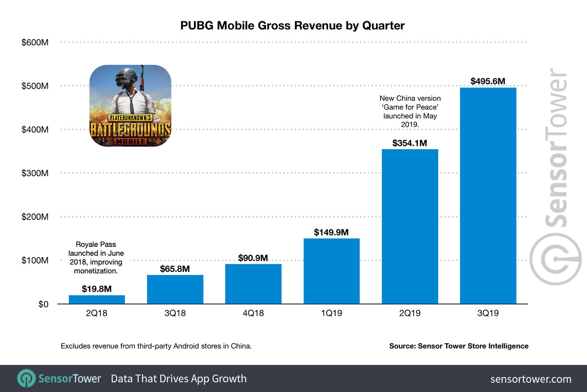
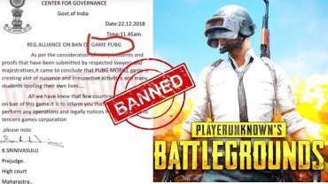

------------PlayerUnknown's BattleGrounds(PUBG)-------------
Battlegrounds (previously known as PlayerUnknown's Battlegrounds) is a battle royale game developed by PUBG Studios and published by Krafton. The game, which was inspired by the Japanese film Battle Royale (2000), is based on previous mods created by Brendan "PlayerUnknown" Greene for other games, and expanded into a standalone game under Greene's creative direction. It is the first game in the PUBG Universe series.
PUBG Mobile features gameplay similar to that of the original PlayerUnknown's Battlegrounds. Players parachute down to a remote island and fight to remain as the last player standing, competing alone or in teams of two or four, depending on the game mode selected before the match. Each match lasts about 30 minutes. It takes exactly 32 minutes and 50 seconds for the zone to close completely. After that, another 11 seconds or so until you die inside the zone, so potential max of about 33 minutes and 10 seconds if you try to heal yourself.
The development of PUBG Mobile took just 4 months to be completed, as multiple teams from around the world contributed to the project. The project began with the original PC and console version of the game, which was developed by Brendan Greene (known as Player Unknown) and released in 2017. Following the success of that particular game, Tencent Games began their development project with PUBG Studios for the mobile version. In doing so, they had to create an evolution of the Unreal Engine 4, which was optimized to suit the mobile platform, with a focus on smoother performance and enhanced graphics
The games had a combined total of 75 million pre-registrations, and ranked first and second on the Chinese iOS download charts at launch.[20] Following a soft launch in Canada, an English version of Exhilarating Battlefield, localized as PUBG Mobile, was released worldwide on 19 March 2018.[21][22][23] PUBG Mobile KR, a Korean and Japanese oriented version and PUBG Mobile VN, a Vietnamese oriented version released in June 2018 and January 2019 respectively.
PUBG Mobile grossed ¥3.58 billion ($32.42 million) in Japan in 2018.[51] PUBG Mobile grossed over $3.5 billion in revenue by August 2020.[52] PUBG Mobile grossed over $2.6 billion in 2020, making it the highest-grossing game of the year and bringing its total revenue to over $4.3 billion as of December 2020.[53] That figure had increased to over $9 billion as of December 2022.[4]
On 2 September 2020, the Ministry of Electronics and Information Technology banned PUBG Mobile in India amid the 2020 China-India skirmish. Following this, Tencent Games terminated all services for users in India on 30 October 2020. On 6 May 2021, Krafton announced the relaunch of the game in India, following the ban imposed by the Government of India. Krafton published the game in the country as Battlegrounds Mobile India(BGMI), which can only be accessed by users in the country. In 2022, BGMI was removed from the play store and the apple Appstore as per orders from the Indian Government due to an alleged data leak to Chinese servers, however the game could still be played and installed using an .apk file [33][34] On 19 May 2023, Krafton publicly announced BGMI was being relaunched for a trial period after a 10-month long dispute.[35] The game was finally re-released on May 27 for Android users and May 29 for iOS users. However, on both the platforms, it was playable only after May 29.
